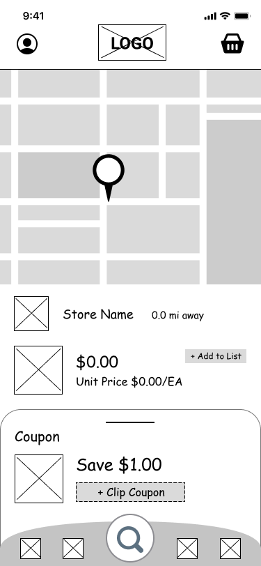
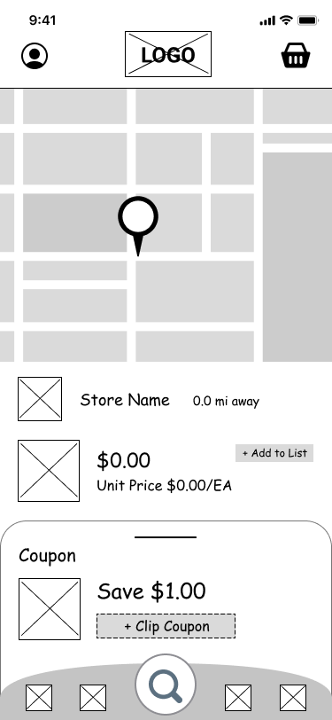

User Survey
Through this research, I wanted to get an insight on shopper patterns and gauge how many people actually compare prices. An interesting discovery was that not as many people actually use the various applications that are currently available. The results of this survey provided a good direction in terms of how to further study the various types of shoppers and discover how to change app usage patterns. Three main focuses were how often they compare prices, what resource(s) they currently use, and pain points. A common pain point was the time consuming effort of looking up products to compare prices. Another was not always being able to see the unit price. Of the participants, only 60% compared prices, and from that group, 32% look at sales and deals on physical weekly ads, 32% look up on individual store’s websites, and 16% use an app that displays weekly ads. Only 1 shopper uses an app that compares various stores, and the rest use various other methods.


 
